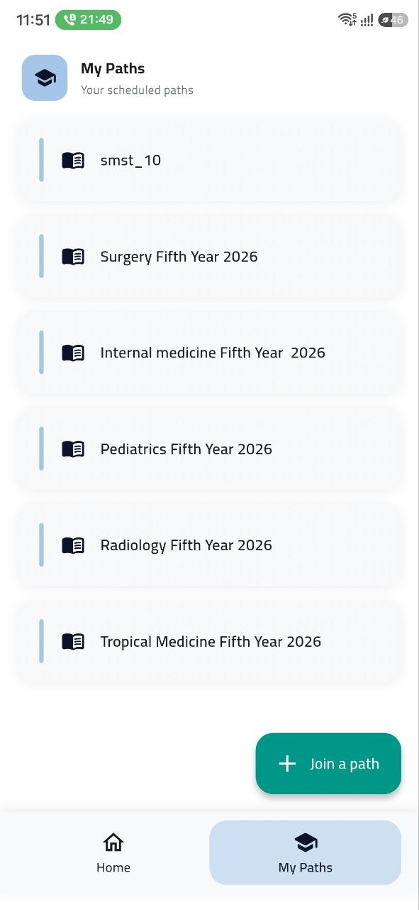
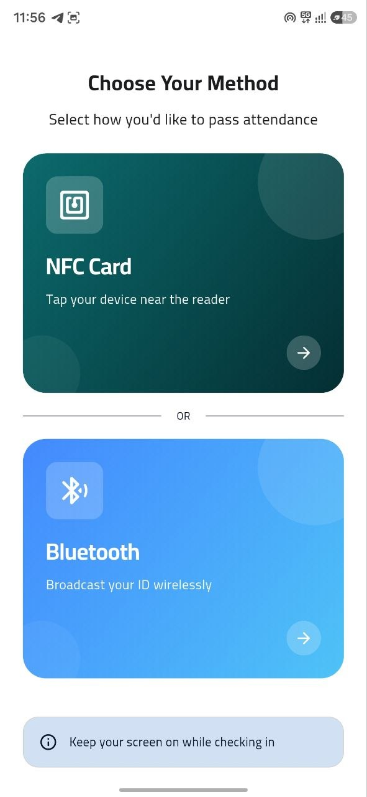
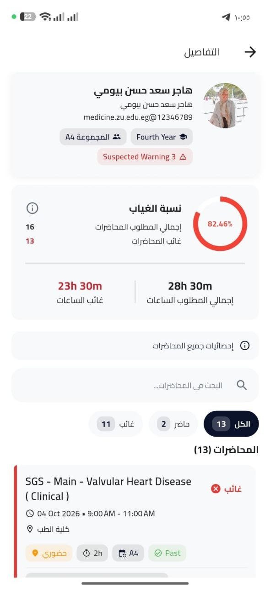
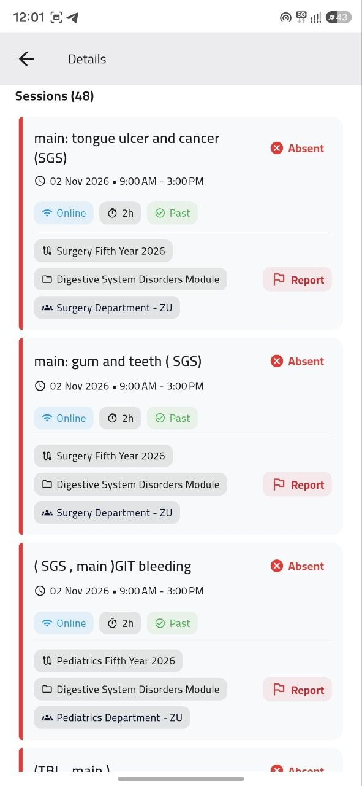

بطاقة مستقلة لكل موديول أو مقرر
توضح إجمالي الجلسات المقررة، ما تم تنفيذه منها، والحد الأقصى المسموح به للغياب وفق لائحة الكلية.
تجربة الطالب • كل ما يحتاجه في مكان واحد
يعرض التطبيق للطالب جدوله المعتمد، ومواعيد محاضراته وأماكنها، وموقفه من الحضور والغياب، مع إمكانية تقديم بلاغ مرتبط بالجلسة عند الحاجة.
01 • المواد والأقسام المشاركة
يعرض التطبيق المقررات أو الموديولات المسجلة للطالب في الفصل الحالي، والأقسام المشاركة في كل موديول بحسب هيكل الكلية.
توضح إجمالي الجلسات المقررة، ما تم تنفيذه منها، والحد الأقصى المسموح به للغياب وفق لائحة الكلية.
في الكليات الطبية والعملية، يعرف الطالب بدقة الأقسام المشتركة داخل الموديول الواحد وتوزيع المحاضرات والسكاشن بينها.

02 • الجدول الدراسي
يعرض التطبيق الجدول المعتمد، مع موعد الجلسة ومكانها ونوعها واسم المحاضر.
اسم المدرج أو المعمل، المجموعة أو السكشن، توقيت البدء والانتهاء، واسم عضو هيئة التدريس المحاضر.
يعرف الطالب مسبقاً ما إذا كانت الجلسة داخل الحرم الجامعي أو عبر Microsoft Teams للاستعداد في الوقت المناسب.
03 • تسجيل الحضور
يُسجَّل الحضور بالطريقة المناسبة لطبيعة الجلسة وتجهيزات الكلية، مع مسار إلكتروني للحالات الاستثنائية.
عند فتح المحاضر للجلسة، يُسجَّل حضور الطلاب الموجودين داخل القاعة عبر Bluetooth في ثوانٍ.
رصد داخل نطاق القاعةيُستخدم NFC في الجلسات المجهزة به لتسجيل الحضور عند الدخول، من دون اقتطاع وقت من المحاضرة.
رصد عند نقطة الدخولإذا تعذّر استخدام وسيلة الرصد المعتادة، يستطيع المحاضر تسجيل الحالة من القائمة الإلكترونية للجلسة بعد مراجعتها.
مسار موثق للحالات الاستثنائية
04 • متابعة الغياب
بعد تسجيل الجلسة، يظهر للطالب موقفه في كل مقرر: ما حضره وما غاب عنه وما يتبقى حتى الحد الذي تحدده لائحة الكلية.
يعرض عدد الجلسات المحضورة والغائبة والنسبة المئوية المتبقية قبل الحد اللائحي.
تمييز بصري واضح بين الحالة الآمنة، التنبيه المبكر، الإنذار الأكاديمي، وموقف الحرمان.


05 • البلاغ الإلكتروني بدل التظلم الورقي
إذا كان الطالب حاضراً ولم يُسجَّل حضوره أو واجه حالة استثنائية، يقدّم بلاغاً من التطبيق مرتبطاً بالجلسة نفسها، ثم يتابع حالته.
يختار الطالب الجلسة ويكتب سبب البلاغ لتصل المراجعة إلى محاضر الجلسة.
يتابع الطالب بلاغه وهو قيد المراجعة، أو مقبول، أو مرفوض. وعند قبول البلاغ ينعكس التعديل على سجل الحضور.
أسئلة شائعة
إجابات عن الحالات المعتادة داخل القاعات والمعامل.
تكامل الأدوار داخل المنظومة
الطالب يتابع جدوله وحضوره، والمحاضر يسجل الجلسة ويراجع البلاغات، والمنسق يتابع اكتمال السجلات قبل إصدار التقارير.
تتبّع انتقال العمل من استيراد الجدول حتى مراجعة البيانات والتقارير.
كيف يسجل عضو هيئة التدريس الجلسة ويرد على بلاغات الطلاب.
الجدول، تسجيل الحضور، متابعة الغياب، والبلاغ الإلكتروني.
تجهيز الجداول ومتابعة التسجيلات والبلاغات قبل التقارير.
نقدم عرضاً عملياً مباشراً يوضح دورة عمل الطالب والمحاضر والمنسق على هيكل مقررات كليتكم.